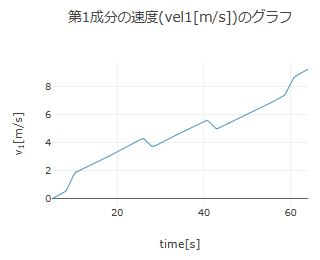
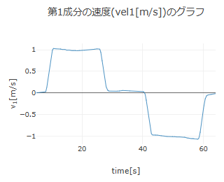

【操作方法】
■ データのゼロ調整
「▶ 加速度のゼロ調整」，「▶ 速度のゼロ調整」，「▶ 位置のゼロ調整」の行をクリックするとゼロ調整の設定欄が表示される（もう一回クリックすると閉じる）．ゼロ調整では，データ全体を設定した値だけシフトさせてゼロ点を調整することができる．
例として，ある加速度データを読み込んで「分析に使用する時間領域の設定」を行った後に下図の加速度グラフが得られたとする．加速度センサーの系統誤差などによって値がずれて記録されることがあり，下図のグラフの場合，本来加速度がゼロである点が約0.156 m/s2の値をもっている．
この場合，「加速度のゼロ調整」の設定欄において，第1成分のゼロ調整にチェックを入れ，右の値欄にゼロ点とする加速度の値を入力する（下図では．右端にある「平均」ボタンを押して，設定した時間領域での加速度の平均値を入力している）．値を入力後，「ゼロ調整」ボタンを押すと，チェックを入れた成分のデータ全体を入力した値だけシフトし，グラフを更新する．「解除」ボタンを押すと，ゼロ調整を取り消すことができる．
初速度ゼロで測定を開始して，測定終了時においても速度ゼロの場合，測定開始から終了までの時間範囲で加速度を積分するとゼロとなる．そのような運動を測定した場合，加速度データの平均値は（測定間隔が一定ならば）ゼロとなるため，加速度のゼロ調整で「平均」ボタンを押したときに値がゼロでなければ，その値でゼロ調整を行えばよい．
上の加速度データについて，ゼロ調整せずに求めた速度とゼロ調整してから求めた速度のグラフを以下に示す．ゼロ調整ありで求めた方が正しい速度のグラフを示している．


「速度のゼロ調整」や「位置のゼロ調整」の方法も同様である．もし，運動の測定開始時の位置と測定終了時の位置が同じ点の場合（つまり，運動後に同じ位置に戻ってくる場合），その時間範囲で速度を積分するとゼロとなる．よって，そのような運動であれば，速度の平均値は（測定間隔が一定ならば）ゼロであり，速度のゼロ調整で「平均」ボタンを押したときに値がゼロでなければ，その値でゼロ調整を行えば，速度を数値積分したときに元の位置に戻る結果が得られる．位置のゼロ調整においては，原点にとりたい値を設定してゼロ調整を行えば，任意の点を原点に設定できる．これは，速度から位置を計算（数値積分）する際に初期位置を設定することと本質的には同じことである．
ただし，加速度や速度のゼロ調整を行うと元の運動と齟齬が生じることがあるため理解したうえでゼロ調整を行う必要がある．